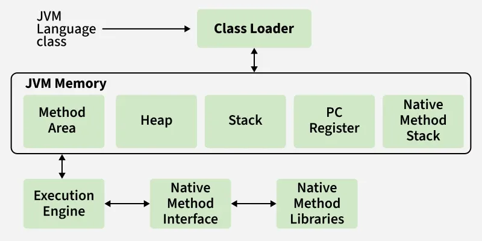

The JVM (Java Virtual Machine) is an abstract computing machine that enables a computer to run a Java program. It acts as a runtime engine that calls the main method inherent in Java code. The JVM is the core reason behind Java's famous slogan: "Write Once, Run Anywhere" (WORA), as it compiles source code into platform-independent bytecode.
Use this flowchart to see how subsystems connect and pass runtime data:

Responsible for loading, linking, and initializing the class files (.class) into the JVM memory. It operates in three main phases:
Reads the binary data of the class and stores it in the method area. There are three built-in class loaders:
rt.jar).jre/lib/ext)..class file structure against JVM rules.The final phase where all static variables are assigned their actual defined values, and static blocks are executed.
This is the memory allocated by the JVM to run programs. It is divided into five distinct components:
Once the bytecode is loaded into memory, the Execution Engine executes the instructions line by line. It contains three main components:
Reads the bytecode instructions and executes them sequentially. While quick to start up, it can be slow when executing repeated blocks of code (like loops), as it re-interprets the code every time.
Counterbalances the interpreter's speed issue. It monitors code execution and compiles frequently repeated bytecode ("hot spots") into native machine code, boosting execution speeds significantly.
An automated program that runs in the background. It tracks live objects and automatically destroys unreferenced, unreachable objects to reclaim heap memory.
The bridge between Java code and external operating system resources.
An API wrapper framework that allows Java code running inside the JVM to interact and call applications/libraries written in native hardware-level languages like C, C++, or Assembly.
A collection of the actual native libraries (e.g., .dll files on Windows or .so files on Linux) required by the execution engine during code operation.
A breakdown of how memory regions manage data scope and accessibility:
| Memory Area | Scope / Access | Primary Purpose |
|---|---|---|
| Method Area | Shared by all threads | Class structures, metadata, static variables |
| Heap Area | Shared by all threads | Instantiated objects and arrays |
| JVM Stack | Per thread private | Local variables, method execution frames |
| PC Register | Per thread private | Tracks next instruction to execute |
| Native Stack | Per thread private | C/C++ native method execution data |